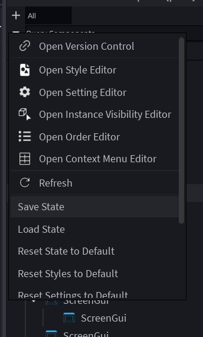
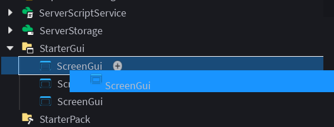
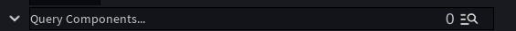
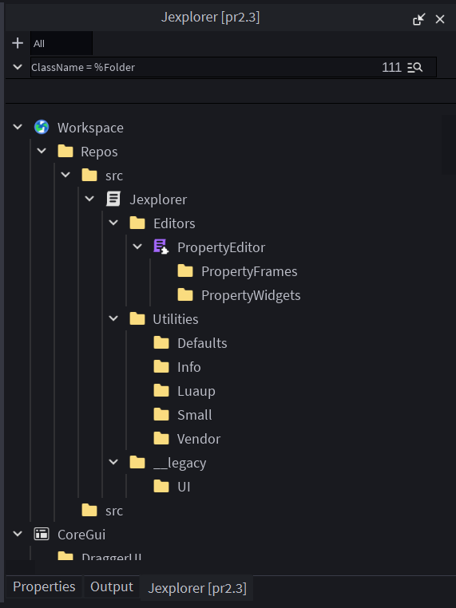
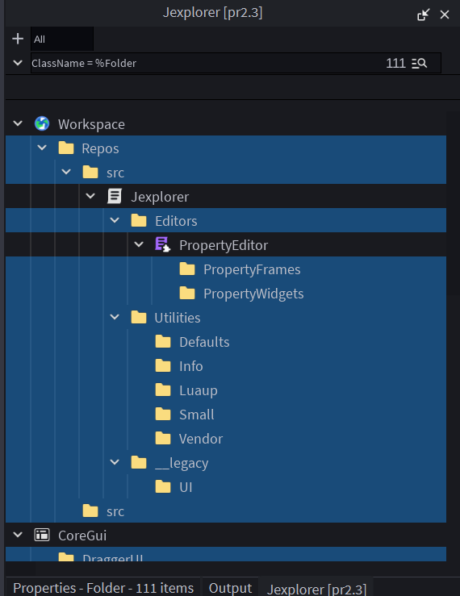
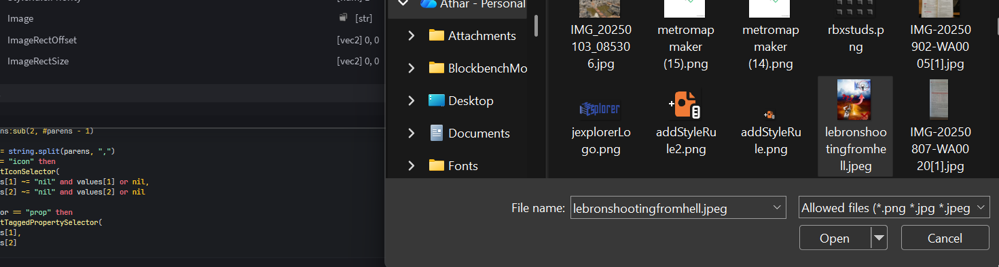

Formats & Languages
Some text formats and languages that Jexplorer uses that you need to use for certain functions of the plugin.
Jexplorer Query Language
The Jexplorer Query Language (JQL) is the language used by the explorer search bar to structure instance queries.
It contains a few operators that you can use to narrow your search down:
| Operator Syntax | Alias | Example | Passes if an Instance |
|---|---|---|---|
(PROPERTY NAME) = (UDF VALUE) | Property Equality | ClassName = %Folder | has this property and the specified value assigned to it. |
(PROPERTY NAME) != (UDF_VALUE) | Property Inequality | ClassName != %Folder | has this property but not the specified value assigned to it. |
(TAG NAME) | Has Tag | MyTag | has a tag of this name. |
!(TAG NAME) | Doesn't Have Tag | !MyTag | doesn't have a tag of this name. |
<(CONDITION) | Parent Condition | <<Name = %Workspace | 's Parent passes the CONDITION. Is stackable. |
>(CONDITION) | First Child Condition | >>Name = %Part | contains atleast 1 child of the specified depth (amount of > arrows) where CONDITION passes. Is stackable. |
Universal Datatype Format
Universal Datatype Format (UDF) is a way for Jexplorer to serialize values as strings such that when it is deserialized the type is known and the value can be fully reconstructed.
To achieve this, at the beginning of each UDF string there is a "tag" which is just square brackets enclosing the type of the value described after it.
Example:
[vec3] 10, 2, 30
[str] Hello World!
[num] 10
Typing each tag out manually may be tedious for applications such as using the Jexplorer search bar or the style editor, so ontop of tags UDF additionally provides some specialized sigils as shorthands for types.
All of them are listed below
| Sigil | Is the same as | Example |
|---|---|---|
% | [str] | %Hello World! |
# | [num] | #10 |
? | [bool] | ?true |
$ | [expr] | $ 10 + $MyToken |
@ | [selector] | @icon(Folder, nil) |
List of UDF datatype tags
| Tag | Alias | Example |
|---|---|---|
[str] (STRING) | String | [str] Hello World! |
[num] (FLOAT OR INT) | Number | [num] 1.101 |
[bool] (BOOLEAN) | Boolean | [bool] true |
[udim2] (X SCALE), (X OFFSET), (Y SCALE), (Y OFFSET) | UDim2 | [udim2] 0, 10, 1, 0 |
[udim] (SCALE), (OFFSET) | UDim | [udim] 1, 0 |
[rgb] (R), (G), (B) | Color3 (RGB) | [rgb] 200, 2, 0 |
[hex] (HEX STRING) | Color3 (Hex) | [hex] 00ffe1 |
[vec3] (X), (Y), (Z) | Vector3 | [vec3] 10, 2, 10 |
[vec2] (X), (Y) | Vector2 | [vec2] 10, 2 |
[enum.EnumType] (ENUM ITEM NAME) | EnumItem | [enum.CameraType] Custom |
[expr] (EXPRESSION) | JELExpression | [expr] $Token > 10 ? rgb(1, 2, 3) : rgb(2, 3, 4) |
[json] (JSON) | JSON | [json] {"hello": "world", "empty":null} |
[selector] (MACRO AND ARGS) | StyleSelectorMacro | [selector] icon(Model, nil) |
[font_enum] (FONT ENUM NAME) | FontFace | [font_enum] SourceSans |
[font_asset] (WEIGHT) (STYLE) (ASSET ID) | FontFace | [font_asset] Light Italic ROBLOX_ID |
[font_family] (WEIGHT) (STYLE) (FAMILY NAME) | FontFace | [font_family] Light Normal SourceSans |
Jexplorer Expression Language
JEL is a language used in Jexplorer made to make using computed expressions, mostly for usage in Styes, possible.
Operators:
| Symbol | Alias | Description | Example |
|---|---|---|---|
+, -, *, /, //, %, ^ | Math | The usual arithmetic and geometric operators in luau, you should know what these do. | 1 + (-1) |
() | Parentheses | Explicitly specifies an expression and computes it before anything else. | (1 + 1) |
$ | Variable | Uses the value of the variable assigned to the name. | $MyVar + 1 |
== | Equality | Checks if both operands are equal. | $MyVar == 1 |
!= | Inequality | Checks if both operands are inequal. | $MyVar != 2 |
< | Less than | Checks if the first operand is less than the 2nd operand. | $MyVar < 5 |
> | More than | Checks if the first operand is more than the 2nd operand. | 5 > $MyVar |
<= | Less than or equal to | Checks if the first operand is less than or equal to the 2nd operand. | 5 >= 5 |
>= | More than or equal to | Checks if the first operand is more than or equal to the 2nd operand. | 4 >= 2 |
? : | Ternary | Uses the 2nd operand if the 1st operand is truthy, and the 3rd operand if not. | $MyVar < 5 ? 25 : 10 |
'' | String Constructor | Constructs a string. | 'Helllo Worldddlldld' |
Functions:
| Signature | Description | Example |
|---|---|---|
rgb(r: number, g: number, b: number) -> color3 | Constructs a color3 from 3 rgb number values. | $MyVar + rgb(1, 2, 3) |
hex(hexstr: string) -> color3 | Constructs a color3 from a hex string. | hex('#ff00ff') |
udim(scale: number, offset: number) -> udim | Constructs a udim from a scale and offset value. | udim(0.5, 10) |
udim2(xscale: number, xoffset: number, yscale: number, yoffset: number) -> udim2 | Constructs a udim2 from a scale and offset value for both the x and y axis respectively. | udim2(0.5, 0, 0, 10) |
vec3(x: number, y: number, z: number) -> vector3 | Constructs a vector3 from x, y and z number values. | vec3(0.5, 1, -2) |
vec2(x: number, y: number) -> vector2 | Constructs a vector2 from x and y number values. | vec2(0.5, 1) |
min(...number) -> number | Returns the smallest number out of a tuple of numbers. | min(1, 2, 3, 4) returns 1 |
max(...number) -> number | Returns the biggest number out of a tuple of numbers. | max(1, 2, 3, 4) returns 4 |
floor(x: number) | Returns the smallest integer to x. | floor(0.5) returns 0 |
ceil(x: number) | Returns the largest integer to x. | ceil(0.5) returns 1 |
round(x: number) | Returns the closest integer to x. | round(0.5) returns 1 but round(0.4) returns 0 |
clamp(x: number, min: number, max: number) | Returns the value clamped to more than or equal to min and less than or equal to max. | clamp(5, 1, 3) returns 3. |
Usage Guide
A surface-level guide on how to use Jexplorers most basic and essential features
The Dropdown Menu
The dropdown menu is the menu accessible by clicking the little downwards-pointing arrow on the top left corner of the plugin widget.
(the arrow)

It allows you to open the widgets for all of Jexplorer's Editors and also displays a few utility buttons such as for resetting certain state or refreshing the virtual scroller.
(the menu) 
Selecting Instances in Jexplorer
Selecting instances works basically the same way as Roblox's default explorer.
Left click to deselect the current selection and select a new instance,
control + left click to toggle selection on an instance,
shift + left click to select all instances inbetween the just-selected one and your last selected one.
Reparenting Instances Using Drag and Drop
To start dragging instances, you can hold left click on one of the instances that's in your current selection and move your mouse to create a drag frame.
(Drag frame.) 
Keep holding left click until you've found the instance you wanna reparent your selection into, then "drop" the drag frame into your desired instance by releasing left click while your mouse is hovered above it.
This will reparent all instances within your current selection into the instance you just dropped into.

How to Use The Search Bar
Before reading this page, you should read the page for JQL
The search bar is a little textbox positioned on the top of the plugin widget which allows you to query for instances meeting specific conditions.

In order to use it, you simply have to type in your desired condition for your instances in JQL into the search bar, then click enter to query it.
Once you've clicked enter, all instances matching your condition will be displayed like in the default explorer.

You'll see that on the right edge of the search bar, there is a number indicating how many instances matched your query, and a little magnifying glass button which when clicked will select all instances that matched your query.

To go back to the default state of jexplorer, simply clear the text inside the search bar and press enter again. This will revert the state back to how it originally was
Making Custom Explorer Icons
Before reading this page, you should read the page about the style editor first.
To make a custom explorer icon, you must first open the style editor, then click the "+" button inside the main "Rules" dropdown.
(click the "+" button here, the one opposite of "StyleRules")

Once you've clicked the "+" button, a little menu should appear in the main Jexplorer widget prompting you to input a "Selector" and "Priority".

To make a custom explorer icon, input this macro as "Selector", input your desired values:
@icon(Name?, Class?)
Example usage:
@icon(Scripts, Folder)
@icon(nil, Part)
@icon(Character, nil)
If both arguments are provided, the icon will only be applied to instances whose names and ClassNames match the provided arguments.
Else it'll only apply if it matches the one you provided, either name or ClassName.
Once you've input the "Selector", now input "Priority" as anything above 0 (the default priority for explorer icons is 0, anything above it and you'll be overriding the default ones)
Finally, click "Create" to create your new StyleRule.
Once you've done this, scroll down to the very bottom of the StyleRules list and you'll see a new dropdown with the name "CustomStyle"
Open the dropdown and you'll see that some fields are already filled out, such as Image, ImageRectSize and ImageRectOffset. The one we are interested in is Image

To import your very own explorer icon for this style, simply click the little folder icon next to Image. This will prompt you to insert a png/jpg/jpeg file, which will be used as the explorer icon for the style.

Once you've imported your image, the new explorer icon should instantly apply to all instances who fit the arguments you passed into @icon()! (In this example, all instances named "Folder" regardless of ClassName will have the "lebron shooting into heaven from hell" meme explorer icon applied!)

Tabs
Tabs are a way for you to configure the root instances (or so called "services") that are displayed within your Jexplorer widget.
To add a new tab, simply click the "+" button on the very top left of the Jexplorer widget, this will add a new tab called "Tab".
To add new top-level instances to your new tab, simply click the "+" button inside it.
This will redirect you to the "All" tab, where you can select all the instances you want as top-level instances in your new tab, and click Enter to add them to your tab and go back to it.
To switch between tabs, simply click between them in the tab bar which is on the very top of the Jexplorer widget.
Another way to add instances into your tab is to drag-and-drop it into the tab button itself
To remove an instance from your tab, use the "Remove from Tab" context menu action which is located at the very bottom for the default Instance context menus.
Editors
All the editors you can use to modify/add to Jexplorers behavior.
The Setting Editor
The setting editor is a way for you to edit internal conditions & values.
The following are a list of settings which are present inside the setting editor, including the dropdown theyre located inside:
Expand Behavior
### [bool] Auto Expand Ancestors on Select Unexpanded Instance
If all ancestors to an instance should be expanded if you select one with unexpanded ancestors.
Internal Behavior
### [float] ExplorerEntity Creation Cycle Interval
The interval at which [ExplorerEntities](../scripting_api/internal_types.md) are created in bulk.
### [float] Queue Flush Cycle Interval
The interval at which several internal queues are flushed, such as [ExplorerFrame](../scripting_api/internal_types.md) assignment, child added/removed actions, etc.
### [float] ExplorerFrame Reuse & HierarchyCache Rebuild Cycle Interval
The interval at which [ExplorerFrames](../scripting_api/internal_types.md) are reused and the internal entity hierarchy caches are rebuilt
### [float] ExplorerEntity Cleanup Cycle Interval
The interval at which [ExplorerEntities](../scripting_api/internal_types.md) are deleted and cleaned up.
Saving Behavior
### [bool] Autosave Instance Changes
If instance changes will be automatically saved by the internal version tracking system on an hourly basis.
### [bool] Save On Close
If the SavedStateInstance of the plugin will be saved on close, or if it needs to be manually saved using the "Save State" button inside the dropdown menu.
Scrolling Behavior
### [float] Virtual Scrolling Scroll Settle Time
How long after you've stopped scrolling until the plugin will start reusing ExplorerFrames
### [float] Non-smooth Scroll Step
How much you will scroll up/down per scroll step if you have SmoothScrolling disabled.
### [bool] Smooth Scroll Enabled
If the plugin will use a custom fixed-step scrolling or Roblox's smooth scrolling for ScrollingFrames.
### [float] Non-smooth Scroll Threshold
How much you need to move your scrolling wheel before scrolling starts if you have SmoothSccrolling disabled
### [float] Virtual Scrolling Instance Frame Buffer
How much space of unreusable ExplorerFrames is left around the margins of the viewport to make reuse less visible
### [float] Virtual Frame Reuse Cooldown
Cooldown for how often ExplorerFrames are allowed to be reused.
Select Behavior
### [float] Cooldown to Double Click to Rename
How much time needs to be inbetween 2 clicks at max in order to trigger rename
### [float] Cooldown to Double Click to Open Script
How much time needs to be inbetween 2 clicks at max in order to trigger open script on LuaSourceContainer ExplorerFrames
### [bool] Property Editor Updated On Selection Change
If the property editor should be updated on selection change (default is false because currently it causes lag due to unreused property frames)The Context Menu Editor
The context menu editor is the editor you use to customize/add context menus inside Jexplorer.
The way this works is by using a custom ModuleScript that returns ContextMenuConfigs, whose structure is this:
type ModuleReturn = ((Plugin, Manager) -> ContextMenuConfigs) | ContextMenuConfigs
type ContextMenuConfigs = {
Menus: {
{
Id: string,
Priority: number,
Condition: (manager: Types.Manager, target: Types.ExplorerEntity) -> boolean,
Contents: {any} | (createInterface: () -> ContextMenuInterface) -> {any},
DefaultActionsName: string?,
}
},
Actions: {
[string]: {
Callback: (manager: Types.Manager, target: Types.ExplorerEntity) -> (),
Text: string,
Tooltip: string,
Icon: string?
}
}
}
type ContextMenuInterface = {
GetMenuContents: () -> {any},
GetSubMenu: (name: string) -> ContextMenuInterface,
Remove: (idx: number) -> (),
Insert: (idx: number, v: any) -> (),
FindAction: (name: string) -> number,
FindSubMenu: (name: string) -> number
}
A few things need to be clarified:
The contents of the array ContextMenuConfigs::Menus::value_type::Contents are as follows:
- Any string for the name of a registered PluginAction, created within
ContextMenuConfigs::Actions - The string "---", specifying a seperator
- The mixed table
{Id: string, Title: string, Icon: string?, [1]: typeof(ContextMenuConfigs::Menus::value_type::Contents)}specifies a submenu
Heres an example value for Contents:
{
"MyAction1",
"MyAction2",
"---"
{
Id = "Menu.More",
Title = "More",
{
"Cool1",
"Cool2",
"---",
"Cool3"
}
},
"---",
"LastAction"
}
Now, you may be wondering how to edit default context menus without completely overwriting them, and that's by specifying ContextMenuConfigs::Menus::value_type::Contents as a function that accepts a createInterface function that can be called to get a ContextMenuInterface.
This ContextMenuInterface will contain the default context menu you specified in the DefaultActionsName field.
Everything else should be clear enough for you to understand. If it isn't, heres an example of an extensive ContextMenuConfigs module i made for my game:
local function apply_surface_type(manager, type)
local state = manager.WidgetState
local components = manager.Components
local world = state.World
for _, ent in state.CurrentSelection do
local inst = world:get(ent, components.Instance)
if not inst then continue end
if not inst:IsA("BasePart") then continue end
for _, v in Enum.NormalId:GetEnumItems() do
local prop = `{v.Name}Surface`
inst[prop] = type
end
end
end
local function insert_contents(createInterface, actionName)
local interface = createInterface()
if actionName then
interface.Insert(
interface.FindAction("InsertFromFile"),
actionName
)
end
return interface.GetMenuContents()
end
local function insert_system(manager, target, src)
local state = manager.WidgetState
local world = state.World
local inst = world:get(target, manager.Components.Instance)
if not inst then return end
local module = Instance.new("ModuleScript")
module.Name = "(System) "
module.Source = src
module.Parent = inst
local ent = manager.getOrCreateInstanceEntity(module, target)
manager.setEntitiesAsSelection(world, {ent}, true)
if not world:has(target, manager.Components.Expanded) then
--manager.toggleExpand(world, parent, true, true)
world:add(target, manager.Components.Expanded)
manager.updateExpandedVisuals(false)
end
state.HierarchyVersion += 1
manager.updateVirtualScroller()
game:GetService("ScriptEditorService"):OpenScriptDocumentAsync(module)
end
return {
Menus = {
{
Id = "InstanceMenu_Client",
Priority = 0.5, -- Above instance but not above service
Condition = function(_, _, inst)
return (inst.Parent == game.ReplicatedStorage.Client and inst.Name == "Systems") or inst:IsDescendantOf(game.ReplicatedStorage.Client.Systems)
end,
Contents = function(createInterface)
return insert_contents(createInterface, "InsertSystem_Client")
end,
},
{
Id = "InstanceMenu_Shared",
Priority = 0.5,
Condition = function(_, _, inst)
return (inst.Parent == game.ReplicatedStorage.Shared and inst.Name == "Systems") or inst:IsDescendantOf(game.ReplicatedStorage.Shared.Systems)
end,
Contents = function(createInterface)
return insert_contents(createInterface, "InsertSystem_Shared")
end,
},
{
Id = "InstanceMenu_Server",
Priority = 0.5,
Condition = function(_, _, inst)
return (inst.Parent == game.ServerStorage.Server and inst.Name == "Systems") or inst:IsDescendantOf(game.ServerStorage.Server.Systems)
end,
Contents = function(createInterface)
return insert_contents(createInterface, "InsertSystem_Server")
end,
},
{
Id = "BasePartMenu",
Priority = 2, -- Above service and default
Condition = function(_, _, inst)
return inst:IsA("BasePart")
end,
Contents = function(createInterface)
local interface = createInterface()
interface.Insert(
interface.FindSubMenu("Menu.ConvertInto") + 1,
{
Id = "SurfaceTypes",
Title = "Surface Types",
{
"Studs",
"Inlets",
"StudsAndInlets"
}
}
)
return interface.GetMenuContents()
end,
}
},
Actions = {
Studs = {
Text = "Studs",
Tooltip = "Turns all selected parts into stud surfaces.",
Callback = function(manager)
apply_surface_type(manager, Enum.SurfaceType.Studs)
end,
},
Inlets = {
Text = "Inlets",
Tooltip = "Turns all selected parts into inlet surfaces.",
Callback = function(manager)
apply_surface_type(manager, Enum.SurfaceType.Inlet)
end,
},
StudsAndInlets = {
Text = "Studs and Inlets",
Tooltip = "Turns all selected parts into universal surfaces.",
Callback = function(manager)
apply_surface_type(manager, Enum.SurfaceType.Universal)
end,
},
InsertSystem_Client = {
Text = "Insert System...",
Tooltip = "Inserts an ECS system.",
Icon = "rbxassetid://72574623675660",
Callback = function(manager, target)
insert_system(manager, target, "--!strict\n\nlocal ReplicatedStorage = game:GetService(\"ReplicatedStorage\")\n\nlocal shared = ReplicatedStorage.Shared\nlocal client = ReplicatedStorage.Client\n\nlocal jecs = require(shared.Jecs)\nlocal components = require(shared.Components)\nlocal types = require(shared.Types)\nlocal shared_constants = require(shared.Constants)\nlocal client_constants = require(client.Constants)\n\nreturn function(world: jecs.World, scheduler: types.Scheduler)\n\nend")
end,
},
InsertSystem_Server = {
Text = "Insert System...",
Tooltip = "Inserts an ECS system.",
Icon = "rbxassetid://72574623675660",
Callback = function(manager, target)
insert_system(manager, target, "--!strict\n\nlocal ReplicatedStorage = game:GetService(\"ReplicatedStorage\")\nlocal ServerStorage = game:GetService(\"ServerStorage\")\n\nlocal shared = ReplicatedStorage.Shared\nlocal server = ServerStorage.Server\n\nlocal jecs = require(shared.Jecs)\nlocal components = require(shared.Components)\nlocal types = require(shared.Types)\nlocal shared_constants = require(shared.Constants)\nlocal server_constants = require(server.Constants)\n\nreturn function(world: jecs.World, scheduler: types.Scheduler)\n\nend")
end,
},
InsertSystem_Shared = {
Text = "Insert System...",
Tooltip = "Inserts an ECS system.",
Icon = "rbxassetid://72574623675660",
Callback = function(manager, target)
insert_system(manager, target, "--!strict\n\nlocal ReplicatedStorage = game:GetService(\"ReplicatedStorage\")\n\nlocal shared = ReplicatedStorage.Shared\n\nlocal jecs = require(shared.Jecs)\nlocal components = require(shared.Components)\nlocal types = require(shared.Types)\nlocal shared_constants = require(shared.Constants)\n\nreturn function(world: jecs.World, scheduler: types.Scheduler)\n\nend")
end,
}
}
}
The Context Menu Editor Widget
Now that you have a config file specifying your custom context menus, you need to specify how Jexplorer should access it.
Open the context menu editor widget in the jexplorer dropdown menu and you'll see 2 fields, "Module Name" and "Source Changed Refresh Delay".
"Module Name" is what the name of your ModuleScript returning the ContextMenuConfigs is. SO if your module is named "ContextMenu", you should set "Module Name" to "ContextMenu".
This value supports non-alphanumeric characters so you can also do stuff like ".contextmenu"
"Source Changed Refresh Delay" is how often the internal context menus should be refreshed anytime you change the source of your module that contains the ContextMenuConfigs, since it's updated automatically.
The Style Editor
The style editor allows you to edit internal style & tokens and also create your own custom ones.
Creating a StyleRule
Creating a StyleRule is very simple, simply click the "+" button on the "StyleRules" dropdown header and it'll open a menu in the main Jexplorer widget prompting you to input a Selector and a Priority in order to create a custom style.
Once you click the Create button, a new style called CustomStyle will appear in the bottom of the StyleRules list.
Removing a StyleRule
To remove a StyleRule, simply click the "-" button in its dropdown header.
Adding a Subrule
To add a StyleRule inside another StyleRule, click the button with the StyleRule icon inside the dropdown header of your parent StyleRule (its next to the "+" button) and it'll open the StyleRule creation menu in the Jexplorer widget, just like creating top-level StyleRules.
Adding a Token
To add a token (which is just a reusable value, to learn more you should check out the Roblox Styling API docs since the concepts are 1:1 applicable here) you can click the "+" button in the "Tokens" dropdown header, which is below the "StyleRules" one.
This will open a menu in the Jexplorer widget prompting you to input a name and a value, and this will be your token which can be used in any StyleRule inside the style editor.
Removing a Token
To remove a token, again just click the "-" button beside it.
Version Control
The version control editor is a way to sync your scripts in Roblox Studio with a GitHub repo via Jexplorer.
There are 2 dropdowns, Tokens and Repos.
The Tokens Dropdown
The tokens dropdown is where you store your github fine-grained personal access tokens to your repos.
To create a new token, simply click the "+" button in the header of the dropdown and edit your tokens name and value.
Each repository should ideally have its own fine-grained token stored in here, though 1 universal token is also an option.
To use a token for all actions done via the version control widget, simply click the cursor button in your token, next to the delete button which has a "-" symbol. This will highlight the button blue and that indicates your token is being equipped
Once you've equipped a token, you can perform actions such as push, pull, etc in the Repos dropdown.
The Repos Dropdown
The repos dropdown is where you store your individual GitHub repository proxies. To create a new repo proxy, simply click the "+" button in the dropdown's header and select the root instance for the source of your repo.
This will create a new repo proxy dropdown which you can expand to reveal several options, these being:
- Root: Instance
- RepoId: string (your-user-name/your-repo-name)
- Branch: string (default: main)
- Path: string (the path you wanna push to/pull from, default: src)
- Push: Dropdown
- CommitMsg: string (the commit message you wanna use for the push)
- PushOverwrite: Button (pushes to the repo's source and overwrites existing contents with the new one inside the root instance)
- PushUpdate: Button (pushes to the repo's source and updates existing contents with the new one inside the root instance)
- RevertLastCommit: Button (reverts the last commit made to the branch)
- Pull: Button (pulls the contents of the repo's source into your root instance)
RepoId and CommitMsg are really the only ones you usually need to edit, though if you wanna change the root instance you can click, drag and drop the Root value to select a new one, similar to how you select Instance type properties in Roblox's Properties widget.
The Order Editor
The order editor allows you to configure the order specific classes are sorted in using a list of drag-and-droppable frames representing each class.
To add a new class simply click the "+" button in the dropdown header, and to remove one click the "-" button in the class header.
Instance Visibility Editor
The instance visibility editor is the editor you use to trigger the visibility of certain classes in the Jexplorer widget.
You can input a JSON indicating if an instance class is invisible or not, or you can use the dropdown list where you can click on a specific class to toggle visibility for it.
Scripting API
The outwards-facing scripting API Jexplorer exposes for developers to modify the plugins behavior to their hearts content.
Internal Jexplorer Types
ExplorerEntity
An internal representation of instances in your game, is a JECS entity.
ExplorerFrame
A visual representation for ExplorerEntities in the Jexplorer widget.
FrameState
Used for storing miscallaneous state of `ExplorerFrames.`
Type:
```luau
export type FrameState = {
isLMBActive: boolean,
tagsToRemove: {string},
hasBeenSelected: boolean,
shouldDeselect: boolean,
lastClickTime: number,
packageIconConn: RBXScriptConnection?,
lastPackageIconPos: number,
isAssigning: boolean
}
```
Tab
An internal representation of [tabs](../usage_guide/tabs.md).
Type:
```luau
export type Tab = {
TabFrame: GuiObject,
Button: GuiButton,
InsertButton: GuiButton,
RemoveButton: GuiButton?,
NameBox: TextBox,
Roots: {ExplorerEntity},
Name: string,
Toggle: () -> (),
Remove: () -> (),
}
```
SavedState
An internal representation of saveable, serialized state.
Type:
```luau
type Array<T> = {T}
type InstanceId = string
type UDFValue = string
type PlaceId = string
export type SerializedStyleRule = {
display_name: string,
selector: string,
priority: number,
props: {[string]: UDFValue},
rules: {SerializedStyleRule}
}
export type SavedState = {
repo_proxies: {
[PlaceId]: Array<{
display_name: string,
repo_id: string,
root_inst_id: InstanceId
}>
},
tabs: {
[PlaceId]: Array<{
display_name: string,
inst_ids: {InstanceId}
}>
},
display_order: {
default_order: number,
class_order: {string}
},
data_version: number,
invisible: {[string]: boolean},
settings: {[string]: UDFValue},
style: {
rules: {SerializedStyleRule},
tokens: {[string]: UDFValue}
},
versions: {
[PlaceId]: {
[string]: {
{
timestamp: typeof(DateTime.now():ToUniversalTime()),
props: {[string]: UDFValue},
}
}
}
},
}
```
ContextMenu
An internal representation of Context Menus.
Type:
```luau
export type ContextMenu = {
Actions: {PluginAction},
Menu: PluginMenu,
SubMenus: {ContextMenu},
UnprocessedContents: {any},
Id: string
}
```
RepoProxy
An internal representation of the Version Control Editor's GitHub repository proxies.
Types:
```luau
export type RepoProxy = {
DisplayName: string,
RepoId: string,
Root: Instance,
Remove: () -> ()
}
```
Manager
The main module for handling most of everything in Jexplorer.
Heres the type for it and related objects:
```luau
type Components = {
Selected: Jecs.Id,
Expanded: Jecs.Id,
AncestryLocked: Jecs.Id,
ArrowInvisible: Jecs.Id,
QueryAncestor: Jecs.Id,
QueryExpanded: Jecs.Id,
QueryInvisible: Jecs.Id,
Invisible: Jecs.Id,
IsQueried: Jecs.Id,
PendingChanges: Jecs.Id,
Deleted: Jecs.Id,
DisplayTopLevel: Jecs.Id,
Instance: Jecs.Id<Instance>,
Frame: Jecs.Id<ExplorerFrame>,
Entity: Jecs.Id<ExplorerEntity>,
FrameState: Jecs.Id<FrameState>,
Connections: Jecs.Id<ItemGroup<RBXScriptConnection>>,
FavoriteProxy: Jecs.Id<ExplorerEntity>,
FavoriteProxySource: Jecs.Id<ExplorerEntity>,
ScriptErrors: Jecs.Id<{string}>,
ScriptWarns: Jecs.Id<{string}>,
QueryLinkedEntities: Jecs.Id<{ExplorerEntity}>,
LinkedQueryEntity: Jecs.Id<QueryEntity>,
ParentTabs: Jecs.Id<{[Tab]: boolean}>,
}
export type WidgetState = {
World: World,
QueryWorld: World,
FrameWorld: World,
Connections: ItemGroup<RBXScriptConnection>,
Entities: {ExplorerEntity},
Widget: DockWidgetPluginGui,
CurrentSelection: {ExplorerEntity},
Favorited: {ExplorerEntity},
Tabs: {Tab},
RepoProxies: {RepoProxy},
HierarchyVersion: number,
SavedState: SavedState,
LastSelectedEntity: ExplorerEntity?,
ContextTarget: ExplorerEntity?,
CurrentlyRenaming: ExplorerEntity?,
CurrentlyInserting: {Instance}?,
CurrentDrag: {
Connections: ItemGroup<RBXScriptConnection>,
Frame: typeof(ui.DragFrame),
Entities: {ExplorerEntity}
}?,
JExplorerUI: typeof(ui.JExplorerUi),
DefaultInstanceActionsArray: {any},
InstanceContextMenus: {[string]: {Menu: ContextMenu, Condition: (manager: Manager, target: ExplorerEntity, instance: Instance) -> boolean, Priority: number}},
MiscContextMenus: {[string]: ContextMenu}
}
export type Manager = {
Jecs: typeof(Jecs),
WidgetState: WidgetState,
Components: Components,
Toolbar: PluginToolbar,
Storage: Folder,
PluginActions: {[string]: PluginAction},
ItemLists: {
InsertInstance: PluginUI.ItemList
},
AbstractEntClasses: {
Favorited: "JEXP_ABSTRACT_Favorited"
},
Style: Style.Style,
InstanceToEntity: {[Instance]: ExplorerEntity},
FrameToInstanceFrame: {[Instance]: ExplorerFrame},
SelectionChanged: Signal<{ExplorerEntity}>,
connectInputBegan: (fn: (input: InputObject) -> ()) -> RBXScriptConnection,
connectInputEnded: (fn: (input: InputObject) -> ()) -> RBXScriptConnection,
isKeyDown: (key: Enum.KeyCode) -> (boolean),
isInputActive: (input: Enum.UserInputType) -> (boolean),
getExplorerFrame: () -> ExplorerFrame,
getOrCreateInstanceEntity: (instance: Instance, parent: ExplorerEntity?, dontSetInInstanceToEntity: boolean?) -> ExplorerEntity,
registerTab: (name: string, roots: {ExplorerEntity}, createDeleteButton: boolean, createInsertButton: boolean, registerIntoTabsArray: boolean) -> Tab,
getPropertyTag: (world: World, propName: string) -> Jecs.Id,
createVirtualEntity: (options: {ClassName: string, Name: string, ChildAmount: number, ClassIcon: StudioIconResult, PropTags: {Jecs.Id}, Parent: ExplorerEntity?}, extra: {[string]: any}) -> ExplorerEntity,
createInstanceEntity: (instance: Instance, parent: ExplorerEntity?, dontSetInInstanceToEntity: boolean?) -> ExplorerEntity,
createContextMenu: (id: string, contents: {any}, title: string?, icon: string?) -> ContextMenu,
registerRightClickContextMenu: (menu: ContextMenu, condition: (manager: Manager, target: ExplorerEntity) -> boolean, priority: number) -> (),
getEntityAt: (x: number, y: number, filteredParent: Instance?) -> (Instance?, ExplorerEntity?, Tab?),
onTagAdded: (inst: Instance, callback: (tag: string) -> ()) -> RBXScriptConnection,
onTagRemoved: (inst: Instance, callback: (tag: string) -> ()) -> RBXScriptConnection,
getInstId: (instance: Instance) -> string,
getInstFromId: (id: string) -> Instance?,
getSetting: (name: string) -> any,
setSetting: (name: string, value: any) -> (),
getDragInfo: (inst: Instance, propName: string) -> any,
unpackDragInfo: (dragInfo: any) -> (Instance, string),
setInstanceFramePoolTarget: (n: number) -> (),
fillInstanceFramePoolToLimit: () -> (),
addEntitiesToSelection: (world: World, entities: {ExplorerEntity}, updateSelection: boolean) -> (),
setEntitiesAsSelection: (world: World, entities: {ExplorerEntity}, updateSelection: boolean) -> (),
updateVirtualScroller: () -> (),
updateSelectionVisuals: (updateSelection: boolean) -> (),
updateExpandedVisuals: (update: boolean, expandedCt: Jecs.Id?) -> (),
updateCollapsedVisuals: (update: boolean) -> (),
ChildOf: (ent: ExplorerEntity) -> Jecs.Pair<Jecs.Id, ExplorerEntity>,
init: (onClose: () -> (), connections: ItemGroup<RBXScriptConnection>, widget: DockWidgetPluginGui) -> (),
frameOf: (frame: ExplorerFrame) -> typeof(main.__legacy.UI.InstanceFrame)?,
saveState: () -> SavedState,
loadState: (state: SavedState) -> ({
style: () -> Style.Style,
versions: () -> {
[string]: {
{
timestamp: DateTime,
props: {[string]: any},
}
}
},
tabs: () -> (),
repo_proxies: () -> (),
settings: () -> (),
order: () -> (),
invisible: () -> (),
}, SavedState)
}
```
Editors & Public Facing API
```luau
type Editor = {
Widget: DockWidgetPluginGui,
init: (Manager) -> (),
}
export type StyleEditor = Editor & {
}
export type SettingEditor = Editor & {
Configs: {[string]: any},
getSetting: (Manager: Manager, name: string) -> any,
setSetting: (Manager: Manager, name: string, value: any) -> (),
createSetting: (list: PluginUI.ItemList, settingName: string, displayName: string, valueType: string, defaultValue: any, onChange: ((newValue: any) -> ())?) -> (),
}
export type OrderEditor = Editor & {
ClassPriorities: {string},
DefaultPriority: number,
PriorityVersion: number
}
export type VersionControl = Editor & {
InstanceHistoryWidget: DockWidgetPluginGui,
InstanceHistoryUIList: PluginUI.ItemList,
VersionViewerWidget: DockWidgetPluginGui,
VersionViewerUIList: PluginUI.ItemList,
SourceViewerWidget: DockWidgetPluginGui,
SourceViewerMainframe: typeof(ui.EditorFrame),
Token: GitAPI.LuaSecret?,
RepoId: string,
Versions: {
[string]: {
{
timestamp: DateTime,
props: {[string]: any},
}
}
},
PendingChanges: {
[string]: {
[string]: any
}
},
openSourceViewer: (src: string) -> (),
showInstanceHistoryWidget: (inst: Instance) -> (),
createInstanceVersion: (inst: Instance, changedProp: string, newValue: any) -> boolean,
appendInstanceVersion: (inst: Instance, changedProp: string, newValue: any) -> boolean,
addPendingChange: (inst: Instance, changedProp: string, newValue: any) -> (),
appendPendingChanges: (inst: Instance) -> boolean,
createPendingChanges: (inst: Instance) -> boolean,
createRepoProxy: (display_name: string, repo_id: string, root: Instance, register_into_proxies_array: boolean) -> ()
}
export type InstanceVisibilityEditor = Editor & {
InvisibleClasses: {[string]: boolean},
InvisibleInstances: {[Instance]: boolean},
setInvisible: (className: string, invisible: boolean) -> (),
}
export type PropertyEditor = Editor & {
PropertyList: PluginUI.ItemList,
CurrentSetNilTarget: {{inst: Instance, name: string}}?,
SetNilMenu: PluginMenu,
updateProperties: (instances: {Instance}) -> ()
}
export type ContextMenuEditor = Editor & {
}
export type Jexplorer = {
Manager: Manager,
StyleEditor: StyleEditor,
SettingEditor: SettingEditor,
OrderEditor: OrderEditor,
VersionControl: VersionControl,
PropertyEditor: PropertyEditor,
Dependencies: {[string]: any},
OnLoad: RBXScriptSignal,
OnClose: RBXScriptSignal,
ModifyIconStep: RBXScriptSignal
}
```
`export type Jexplorer` is the type for `shared.Jexplorer`.--tbd--